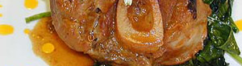

Osso Buco
5,5 von 6ossobuco
die fleischstücke mit mehlbestäuben und in sehr heissem öl gut anbraten. das fleisch hinaus nehmen
und den bratensatz mit ca. 2,5 dl weisswein lösen. in einem grossen bräter stangensellerie, karotten
und zwiebeln andämpfen. wenig zitronenschale und eine gehackte knoblauchzehe beigeben. das fleisch
auf das gemüse geben und den wein sowie 2,5 dl rindsbrühe dazu geben. eine dose gehackte pellati,
thymian, peterli sowie salz und pfeffer darüber verteilen. in den vorgeheizten ofen bei ca 180 grad zwei
stunden garen.
